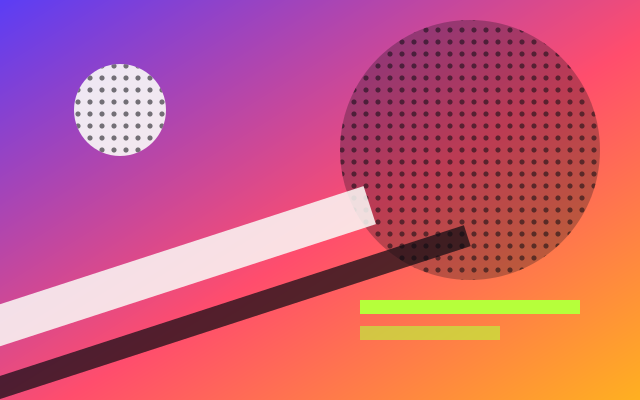

Array, titulares, peso 400
Rendimiento y SEO sin ruido
Segundo nivel de titular
Tercer nivel de titular
Juan Carlos Angulo
Este archivo es estático. Ábrelo con doble clic o sírvelo con npx serve@14. La Fase 52 consume este sistema para construir la home.
Cada muestra lee su color de tokens.css. El nombre y el valor se escriben en texto: el color nunca es la única señal.
--grad corre a 135 grados de violeta a coral (55 por ciento) y ámbar. El texto nunca vive directo sobre él: siempre va sobre el panel --scrim o sobre un panel sólido de tinta.
--ink Tinta
#0B0B12
Fondo base de todas las páginas.
--ink-raised Tinta elevada 1
#14141F
Tarjetas y paneles sobre la tinta.
--ink-higher Tinta elevada 2
#1B1B2A
Elementos dentro de una tarjeta.
--ink-top Tinta elevada 3
#23233A
Menús y capas superiores.
--violet Violeta
#5B3DF5
Inicio del gradiente y relleno de botón con texto papel. Como texto, solo con --violet-text.
--coral Coral
#FF4D6D
Centro del gradiente. Relleno con texto tinta; nunca texto papel encima.
--amber Ámbar
#FFB020
Final del gradiente y anillo de foco. Relleno con texto tinta.
--phosphor Fósforo
#B6FF3B
Solo ASCII, cursores y estados, y siempre sobre tinta o sus superficies elevadas.
--paper Papel
#FAFAF7
Texto principal, sobre tinta, superficies elevadas, violeta y scrim.
--quiet Silencio
#A8ACBB
Texto de apoyo. Nunca sobre el gradiente ni sobre violeta.
--violet-text Violeta de texto
#7A61F7
Texto y enlaces violeta, solo sobre --ink.
--violet-text-raised Violeta de texto elevado
#8F7BFF
Texto violeta sobre las tres superficies elevadas.
--scrim Scrim
rgba(11, 11, 18, .6)
Panel de tinta que va debajo de todo texto sobre el gradiente.
--dot Punto
rgba(168, 172, 187, .18)
Punto del dot grid estático en superficies de lectura.
Cuatro familias autohospedadas en assets/fonts/, sin CDN. Array solo existe en peso 400 y nunca se sintetiza una negrita.
Array, titulares, peso 400
Rendimiento y SEO sin ruido
Segundo nivel de titular
Tercer nivel de titular
Geist, cuerpo y etiquetas
El cuerpo corre a 16 píxeles con una altura de línea de 1.5 y una medida que no pasa de 80 caracteres, para que la lectura larga no canse la vista.
Etiqueta de interfaz a 14 píxeles en Geist.
Geist Mono, ASCII y código
Juego de caracteres permitido: .:-=+*#%@
El arte ASCII es decorativo y lleva aria-hidden. Si transmite información, se da el equivalente en texto normal.
Pixel Label, etiquetas cortas
Auditoría técnica → publicar año 2026
Solo mayúsculas, dígitos y acentos del español, a 12 píxeles o más.
| Token | Valor | Uso |
|---|---|---|
--text-xs | 0.75rem | Etiquetas Pixel Label, el mínimo permitido |
--text-sm | 0.875rem | Etiquetas de interfaz y texto de apoyo |
--text-base | 1rem | Cuerpo |
--text-lg | 1.25rem | Texto destacado |
--text-xl | 1.5rem | Tercer nivel de titular |
--text-2xl | clamp(1.75rem, 1.4rem + 1.5vw, 2.25rem) | Segundo nivel de titular, fluido |
--text-display | clamp(2.5rem, 1.6rem + 4vw, 4.5rem) | Titular principal, fluido |
--leading-body | 1.5 | Altura de línea del cuerpo |
--measure | 80ch | Ancho máximo de lectura |
--tap | 44px | Objetivo táctil mínimo de diseño |
La escala crece en siete pasos. Cada barra usa el token real como ancho.
--space-1 4px--space-2 8px--space-3 16px--space-4 24px--space-5 32px--space-6 48px--space-7 64px--radius-1 2px--radius-2 4px--radius-3 8pxCada efecto se ve completo con CSS y sin JavaScript. El script solo suma movimiento. Hay un solo canvas a la vez: activar una demo destruye la anterior. Solo el grano del hero se monta solo; las demás son opt-in por botón. El movimiento exige que el usuario no pidiera reducirlo, que la página no esté en pausa y, para el montaje automático, un ancho de 768 px o más con puntero fino. Las superficies de lectura solo admiten grano estático o dot grid estático.
Ninguna animación en bucle dura menos de 1 s, así que nada supera 3 destellos por segundo. El botón Pausar animaciones apaga todo el movimiento de la página.
Origen: Grainient, React Bits, Backgrounds.
Texto siempre sobre el scrim, nunca directo sobre el gradiente.
Fallback CSS siempre visible
Origen: PatternWaves, React Bits, Backgrounds.
Puntos halftone en fósforo que derivan despacio.
Fallback CSS siempre visible
Origen: CRTWarp, React Bits, Backgrounds. Faulty Terminal comparte este fallback.
> sistema visual v3
> scanlines, viñeta y fósforo
> listo_
Fallback CSS siempre visible
Origen: MicroSlats, React Bits, Backgrounds.
Franjas en perspectiva.
Fallback CSS siempre visible
Origen: PixelBlast (Backgrounds) y PixelCard (Components), React Bits.
Tramado de 6 px que se disuelve al pasar el puntero o al enfocar.
Fallback CSS siempre visible
Origen: GradientASCII (Backgrounds) y ASCIIText (Text Animations), React Bits.
Fallback CSS siempre visible
Decorativo y con aria-hidden. Solo el juego .:-=+*#%@. Corre en el DOM a 10 fps, no usa canvas.
Origen: Noise, React Bits, Animations.
Versión estática.
Versión viva: cambia 2 veces por segundo.
Fallback CSS siempre visible
Origen: Dither, React Bits, Backgrounds.
Bayer 4x4 en tres densidades.
Fallback CSS siempre visible
Estático, sin shader.
Origen: Gradient Blinds, React Bits, Backgrounds.
El gradiente se ve a través de las persianas.
Fallback CSS siempre visible
Estático, sin shader.
Origen: Halftone Reveal, React Bits, Animations.

Fallback CSS siempre visible
La imagen existe sin JavaScript. Con movimiento permitido, una trama de puntos se disuelve una sola vez al entrar al viewport.
Origen: Pixel Transition, React Bits, Animations.
Portada del caso
Detalle del caso con el resultado y los datos clave.
Ver detalle de ejemploFallback CSS siempre visible
Pasa el puntero o enfoca el enlace con el teclado. Con movimiento reducido el cambio es inmediato.
Origen: Spotlight Card, React Bits, Components.
La luz sigue al puntero fino. Sin puntero queda fija arriba y al centro.
Fallback CSS siempre visible
Origen: Star Border, React Bits, Animations.
Fallback CSS siempre visible
El anillo ámbar y coral orbita en 4 s solo con movimiento permitido; si no, queda fijo.
Mención del scout: Dot Grid, React Bits, Backgrounds. Solo la forma estática.
Rejilla de puntos de 16 px que sostiene la lectura sin moverse.
Fallback CSS siempre visible
Blog, FAQ y case study. Marca: data-surface="reading".
Aquí el texto manda. Solo se admiten grano estático al 6 por ciento y dot grid estático. No hay canvas, demos, ticker ni animación de ningún tipo.
Texto secundario en --quiet, también con ratio calculado.
Fallback CSS siempre visible
Peor caso de contraste: papel sobre tinta con grano de 8 por ciento y un punto del dot grid, 11.00:1. Papel con la luz del spotlight, 7.67:1. Secundario sobre tinta elevada con grano y punto, 4.52:1, con poca holgura sobre 4.5:1.
Ningún color de texto único cumple 4.5:1 sobre todo el gradiente, y el violeta puro sobre tinta queda en 3.2:1. Por eso el texto vive sobre scrim o sobre panel sólido. La tabla sale de tools/contrast.mjs y se lee de tokens.css; no hay valores escritos a mano.
| Par texto y fondo | Grupo | Muestra | Ratio | Umbral | Resultado |
|---|---|---|---|---|---|
| paper sobre ink | Texto normal | 18.75:1 | 4.5:1 | Cumple AA | |
| paper sobre ink-raised | Texto normal | 17.46:1 | 4.5:1 | Cumple AA | |
| paper sobre ink-higher | Texto normal | 16.23:1 | 4.5:1 | Cumple AA | |
| paper sobre ink-top | Texto normal | 14.62:1 | 4.5:1 | Cumple AA | |
| quiet sobre ink | Texto normal | 8.66:1 | 4.5:1 | Cumple AA | |
| quiet sobre ink-raised | Texto normal | 8.07:1 | 4.5:1 | Cumple AA | |
| quiet sobre ink-higher | Texto normal | 7.50:1 | 4.5:1 | Cumple AA | |
| quiet sobre ink-top | Texto normal | 6.76:1 | 4.5:1 | Cumple AA | |
| phosphor sobre ink | Texto normal | 16.20:1 | 4.5:1 | Cumple AA | |
| phosphor sobre ink-raised | Texto normal | 15.09:1 | 4.5:1 | Cumple AA | |
| amber sobre ink | Texto normal | 10.72:1 | 4.5:1 | Cumple AA | |
| coral sobre ink | Texto normal | 6.10:1 | 4.5:1 | Cumple AA | |
| violet-text sobre ink | Texto normal | 4.55:1 | 4.5:1 | Cumple AA | |
| violet-text-raised sobre ink-raised | Texto normal | 5.60:1 | 4.5:1 | Cumple AA | |
| violet-text-raised sobre ink-higher | Texto normal | 5.21:1 | 4.5:1 | Cumple AA | |
| violet-text-raised sobre ink-top | Texto normal | 4.69:1 | 4.5:1 | Cumple AA | |
| paper sobre violet | Texto normal | 5.85:1 | 4.5:1 | Cumple AA | |
| ink sobre coral | Texto normal | 6.10:1 | 4.5:1 | Cumple AA | |
| ink sobre amber | Texto normal | 10.72:1 | 4.5:1 | Cumple AA | |
| ink sobre phosphor | Texto normal | 16.20:1 | 4.5:1 | Cumple AA | |
| phosphor sobre violet | Texto normal | 5.05:1 | 4.5:1 | Cumple AA | |
| phosphor al 50% sobre ink (ASCII que lleva informacion) | Texto normal | 4.56:1 | 4.5:1 | Cumple AA | |
| violet sobre ink | Componentes y bordes | 3.20:1 | 3.0:1 | Cumple AA | |
| amber sobre ink | Componentes y bordes | 10.72:1 | 3.0:1 | Cumple AA | |
| amber sobre violet | Componentes y bordes | 3.34:1 | 3.0:1 | Cumple AA | |
| paper sobre violet | Componentes y bordes | 5.85:1 | 3.0:1 | Cumple AA | |
| quiet sobre ink | Componentes y bordes | 8.66:1 | 3.0:1 | Cumple AA | |
| paper sobre violet con grano de 8% bajo scrim | Texto sobre scrim, peor caso de grano | 12.01:1 | 4.5:1 | Cumple AA | |
| paper sobre coral con grano de 8% bajo scrim | Texto sobre scrim, peor caso de grano | 9.56:1 | 4.5:1 | Cumple AA | |
| paper sobre amber con grano de 8% bajo scrim | Texto sobre scrim, peor caso de grano | 6.76:1 | 4.5:1 | Cumple AA | |
| paper sobre mezcla violet y coral al 50% con grano de 8% bajo scrim | Texto sobre scrim, peor caso de grano | 10.79:1 | 4.5:1 | Cumple AA | |
| paper sobre mezcla violet y coral al 65% con grano de 8% bajo scrim | Texto sobre scrim, peor caso de grano | 10.32:1 | 4.5:1 | Cumple AA | |
| paper sobre mezcla coral y amber al 50% con grano de 8% bajo scrim | Texto sobre scrim, peor caso de grano | 8.19:1 | 4.5:1 | Cumple AA | |
| paper sobre coral | Combinaciones prohibidas como texto normal | 3.07:1 | 4.5:1 | No cumple: uso prohibido | |
| paper sobre amber | Combinaciones prohibidas como texto normal | 1.74:1 | 4.5:1 | No cumple: uso prohibido | |
| phosphor sobre amber | Combinaciones prohibidas como texto normal | 1.51:1 | 4.5:1 | No cumple: uso prohibido | |
| phosphor sobre coral | Combinaciones prohibidas como texto normal | 2.65:1 | 4.5:1 | No cumple: uso prohibido | |
| violet sobre ink (violeta como texto sobre tinta) | Combinaciones prohibidas como texto normal | 3.20:1 | 4.5:1 | No cumple: uso prohibido | |
| quiet sobre violet | Combinaciones prohibidas como texto normal | 2.70:1 | 4.5:1 | No cumple: uso prohibido | |
| quiet sobre amber con grano de 8% bajo scrim (quiet sobre el scrim con el peor caso de ambar) | Combinaciones prohibidas como texto normal | 3.12:1 | 4.5:1 | No cumple: uso prohibido | |
| paper sobre ink con grano de 8% | Superficies de lectura (blog, FAQ, case studies) | 15.58:1 | 4.5:1 | Cumple AA | |
| quiet sobre ink con grano de 8% | Superficies de lectura (blog, FAQ, case studies) | 7.20:1 | 4.5:1 | Cumple AA | |
| paper sobre ink-raised con grano de 8% | Superficies de lectura (blog, FAQ, case studies) | 13.85:1 | 4.5:1 | Cumple AA | |
| quiet sobre ink-raised con grano de 8% | Superficies de lectura (blog, FAQ, case studies) | 6.40:1 | 4.5:1 | Cumple AA | |
| paper sobre ink con grano de 8% bajo dot (con un punto del dot grid debajo) | Superficies de lectura (blog, FAQ, case studies) | 11.00:1 | 4.5:1 | Cumple AA | |
| quiet sobre ink con grano de 8% bajo dot (con un punto del dot grid debajo) | Superficies de lectura (blog, FAQ, case studies) | 5.08:1 | 4.5:1 | Cumple AA | |
| paper sobre ink-raised con grano de 8% bajo dot (con un punto del dot grid debajo) | Superficies de lectura (blog, FAQ, case studies) | 9.78:1 | 4.5:1 | Cumple AA | |
| quiet sobre ink-raised con grano de 8% bajo dot (con un punto del dot grid debajo) | Superficies de lectura (blog, FAQ, case studies) | 4.52:1 | 4.5:1 | Cumple AA | |
| paper sobre ink-raised bajo spot (peor caso del spotlight: luz papel al 12 por ciento) | Superficies de lectura (blog, FAQ, case studies) | 12.55:1 | 4.5:1 | Cumple AA | |
| quiet sobre ink-raised bajo spot (peor caso del spotlight: luz papel al 12 por ciento) | Superficies de lectura (blog, FAQ, case studies) | 5.80:1 | 4.5:1 | Cumple AA | |
| paper sobre ink con grano de 8% bajo dot bajo spot (grano de 8 por ciento, punto del dot grid y luz del spotlight) | Superficies de lectura (blog, FAQ, case studies) | 7.67:1 | 4.5:1 | Cumple AA |
Las filas marcadas como uso prohibido se esperan fallar: documentan lo que no se debe combinar.